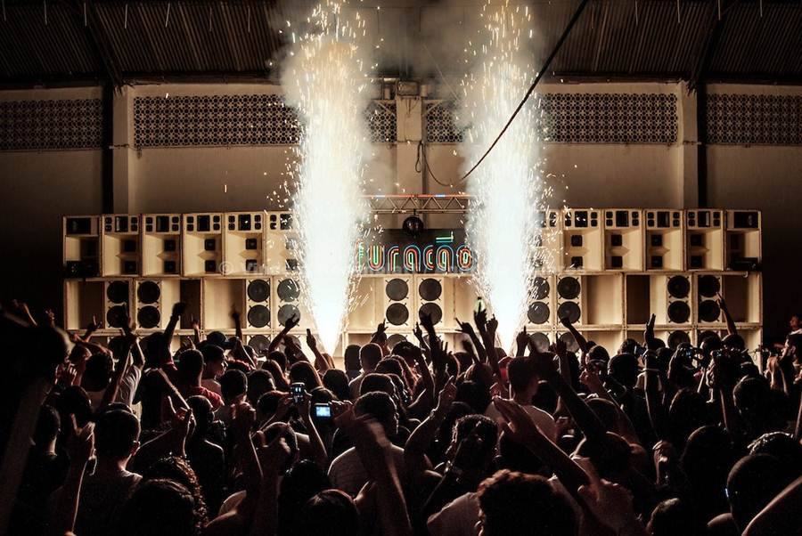
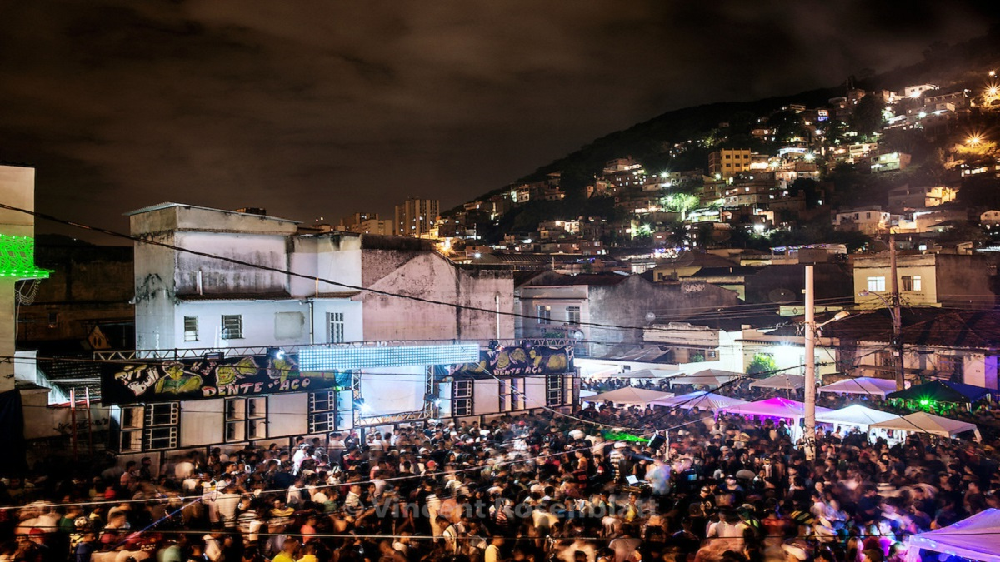

18/08/2022
O funk tem ajudado abrir espaços para novas narrativas brasileiras e também global. O funk nasceu nas periferias, nos centros marginalizados das cidades.
O funk é considerado um movimento social e musical que faz parte da vida dos jovens de periferia, ele influencia o jeito de se vestir as coreografias e linguajar (gírias), etc dos jovens.
Por ser um movimento de contracultura- suas músicas, coreografias e linguagens rompem com os padrões morais e estéticos-, o funk é visto com preconceito e hostilidade.
As pessoas do funk acabam por ter sua imagem ligada à violência apenas por serem da classe popular.
Hoje o funk transformou-se em um estilo de vida, antes havia um estilo próprio dos MCS, porém hoje em dia tornou-se comum.
Letras de “ostentação” talvez tenha sido mais famosas ao decorrer dos anos ,composta por jovens que enxergavam no consumo (dinheiro, roupas, automóveis, etc) ,um novo patamar.
O funk retrata situações cotidianas, um movimento de aceitação maior ao gênero musical, nas letras são retratos temas como: feminismo, injustiças sociais do país, dentro outros.
Por muito tempo, a mídia- jornais e revistas – retratou o funk como violento, sempre relacionando-o à criminalidade. Ao Mesmo tempo em que criminalizam, também ganham dinheiro, publicando notícia envolvendo o estilo, e, no caso da indústria de entretenimento.
Nos últimos dois anos, o gênero tem quebrado as barreiras das favelas do Rio de Janeiro e do Brasil para ganhar o mundo.
Existem, no Brasil, muitos envolvidos na produção desse gênero musical, como Anitta, Luísa Sonza, a produtora Kondzilla, etc, ajudam a espalhar esse movimento.
O funk desafia a moral e os bons costumes, oferecendo novas perspectivas de olhares sobre o corpo e sobre a liberdade significa.
As ruas tomaram-se palcos para a difusão dessa nova concepção em conjunto a novas narrativas de identidades.
O vestuário que até então a um grupo, o do funk, agora são normalizados como estilo de vida e moda.
A questão da representatividade dos artistas do funk, permite a oportunidade de enxergar como se dão as novas narrativas chamadas “minorias” e de seus símbolos de resistências.
